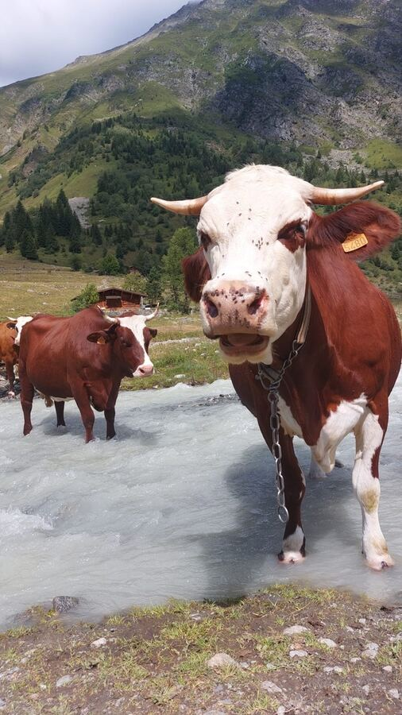

Les Fromages du Bonheur : la carte interactive la plus exhaustive des fromages français. Découvrez les fromages fermiers et artisanaux, localisez les producteurs et fromageries sur la carte, créez votre itinéraire fromager personnalisé. Explorez les fromages AOP, AOC et IGP de toutes les régions de France.
Les 58 fromages AOP, AOC et IGP de France : Abondance · Banon · Beaufort · Bleu d'Auvergne · Bleu de Gex · Bleu des Causses · Bleu du Vercors-Sassenage · Brie de Meaux · Brie de Melun · Brillat-savarin · Brocciu corse · Brousse du Rove · Camembert de Normandie · Cantal · Chabichou du Poitou · Chaource · Charolais · Chevrotin · Comté · Crottin de Chavignol · Emmental de Savoie · Époisses · Fourme d'Ambert · Fourme de Montbrison · Laguiole · Langres · Livarot · Mâconnais · Maroilles · Mont d'Or · Morbier · Munster · Neufchâtel · Ossau-Iraty · Pélardon · Picodon · Pont-l'Évêque · Pouligny-Saint-Pierre · Reblochon · Rigotte de Condrieu · Rocamadour · Roquefort · Saint-Marcellin · Saint-Nectaire · Sainte-Maure de Touraine · Salers · Selles-sur-Cher · Soumaintrain · Tome des Bauges · Tomme de Savoie · Tomme des Pyrénées · Valençay.
